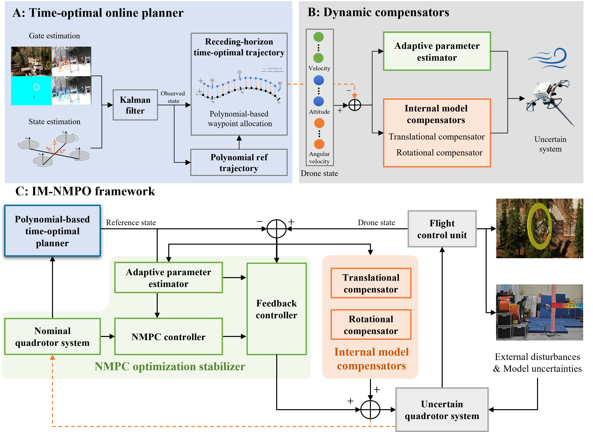

IEEE Transactions on Robotics · 2026
Robust Optimal Agile Flight of Quadrotors: An Internal Model-Based Nonlinear Model Predictive Optimization Approach
1 Beijing Institute of Technology, Beijing 100081, China
2 Queen’s University, Kingston, ON K7L 3N6, Canada
3 Chinese Academy of Engineering, Beijing 100088, China
* Corresponding author
Video
The work in brief
Abstract
Achieving robust agile quadrotor flight under unknown external disturbances and parametric uncertainty remains a significant challenge. Inspired by robust output regulation theory, this paper proposes IM-NMPO, an Internal Model-based Nonlinear Model Predictive Optimization framework for robust optimal planning and control during agile flight.
The effectiveness and generalizability are validated through extensive flight experiments under various disturbances, including unknown payloads, persistent fan-induced winds, and time-varying gusts, across quadrotors with different wheelbases. The framework was successfully deployed in the 2024 DJI Robomaster Intelligent MAV Championship for Planning and Control of Quadrotors, where it completed challenging racing courses at speeds up to 23.3 m/s, ranking first and finishing in less than one-third of the time taken by the second-place.
System overview
IM-NMPO Framework


Reference this work
Citation
@article{wang2026robust,
title = {Robust Optimal Agile Flight of Quadrotors: An Internal Model-Based Nonlinear Model Predictive Optimization Approach},
author = {Wang, Qiang and Guay, Martin and Deng, Fang and Chen, Jie and Lu, Maobin},
journal = {IEEE Transactions on Robotics},
year = {2026},
note = {Accepted for publication}
}Support
Acknowledgements
This work was supported in part by the National Natural Science Foundation of China under Grant U25A20467 and Grant 62373058, and in part by the Beijing Natural Science Foundation under Grant L233003.